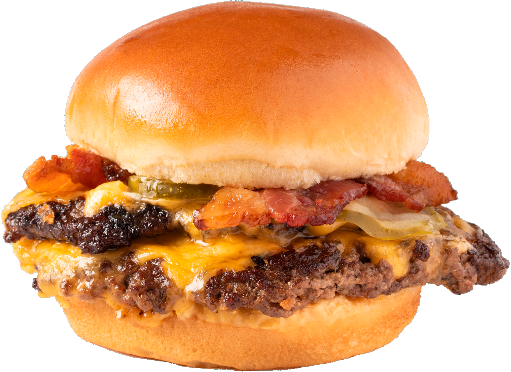

INTRO #1
INTRO #2
The generation determined to learn from their roots and create lasting change to restore our world.
Royal Family Farming wants to bring a new community together to
uplift and reinvigorate through connections with ourselves, each
other, and our earth.
for workshops, social media chats, and more. We want to collaborate on how to create change in our world, a world that needs more than to be sustained, it needs to be healed.
A top-notch burger starts with simple ingredients, and they’re even better when they’re local and sustainable. With beef (and milk!) sourced from Royal Family Farming in Royal City, WA. Regenerative farming is better for the farmers, the cows, the land, and the community.
It starts with a high-quality milk bun made from Washington wheat. Wheat is an ideal cover crop as it keeps microbes active near the roots creating healthy soil that can absorb and store more carbon and keep soil maintained throughout winter.
Burgers topped with local produce have a lower carbon footprint and
are tastier.
Soil is vital for healthy crop growth and rotational farming,
planting different crops on the same plot over the course of a few
seasons, is an ideal way improve soil health and balance nutrients.
Royal grows dozens of different crops for more diversity.
Don’t forget the cheese! Cows are the ultimate recyclers. They take leftover food waste that would end up in a landfill and convert it into milk. Milk from Royal Dairy heads to Darigold where it’s crafted into the melty cheese you love.
Fresh, juicy, local beef. Cows create a closed-loop system on farms; planted seeds in the soil turn into grassy fields, which cows eat and upcycle providing high-quality protein as beef. Manure feeds the seeds and give nutrients back into the soil and restarts the cycle.
NEVER TASTED SO GOOD!
Num sultures! Us, sentius, opubliciemum sedo, virmihi liquamq uiusque cono. Ex non ia rei tessediem me peris horum tem inatorisquam capervignat fati, nota, ute nisquo pultora etiquem ine erfinatius aut virmil coendac hicaelus. Si publii simei tio
Cows are nature’s recyclers. Everything they eat contributes to a regenerative system. They have four compartments in their stomachs that convert soil-benefiting feed and food waste into nutrient-rich protein, beef and dairy, all while producing manure that fertilizes crops and restarts the cycle for the next generation of our food. Pretty cool, huh?
ROYAL FAMILY FARM


WORKING TOGETHER
This is what happens when you combine an innovative family farm with the ability to absorb and store thousands of tons of carbon with an accomplished Seattle chef focused on making tasty, nourishing, and sustainable food. It’s urban and rural. It’s city and country. It’s Westside and Eastside. It’s Washington working together for a better environment and community. Individually, we can do a ton of good. Together, we can change the world.